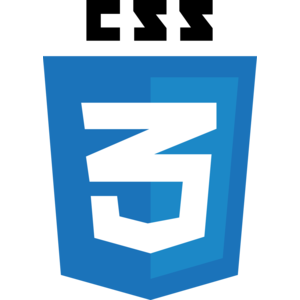

WORK IN PROGRESS
Here are some of my latest lorem work ipsum tipsum.
Click on the images to redirect to github projects

IN PROGRESS

BEGINNER

BEGINNER

IN PROGRESS
Current Work In Progress
My name is Kien Dang and I am a self-motivated learner with an Honours Bachelor of Science (BSc) in Biochemistry with co-operative education from the University of Waterloo. During my co-op terms, I had the pleasure in working in various job environments that include the Canadian Cancer Society, Agriculture and Agri-Food Canada and The Woodbridge Group. Co-operative education has given me the essential skills to succeed in many different job environments ranging from extensive lab experience that were in compliance with ISO and ASTM standards and handling multiple research projects as well as writing many SOPs for the required tasks.
Kien Dang
Here are some of my latest lorem work ipsum tipsum.
Click on the images to redirect to github projects
IN PROGRESS
BEGINNER
BEGINNER
IN PROGRESS
I'd love your feedback!
Swing by for a cup of coffee, or leave me a note: